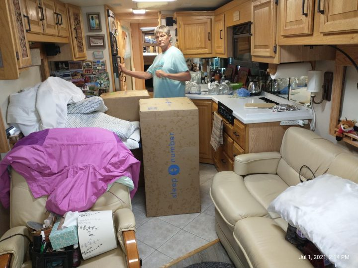
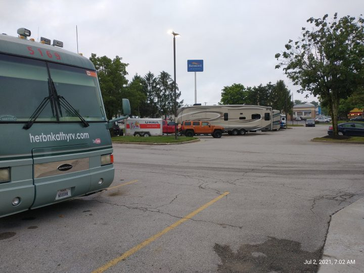

We left Dale Hollow on Thursday July 1st and headed to Lexington Kentucky Camping World. We had made arrangements ahead of time to buy and install a new Sleep Number bed there because it’s priced at $300 below the price at the Sleep Number store. Further, if we ordered it from Sleep Number direct online, there would be no way to get rid of our old mattress.
Alex at Camping World of Georgetown (north side of Lexington) was great. He had the boxes ready and waiting for us. He and I pulled our old mattress out of the coach and got it into his dumpster and he and another young fella brought the two large boxes into the coach for us. Then it was our job to figure out how it went together.

It had been raining all the way up to Lex from Dale Hollow and was still raining hard at Camping World. We just parked in the lot, fired up the diesel generator, turned both a/c units on high, and dug into the instructions. It took us about two hours to get everything hooked up and inflated since we had to read the instructions and we didn’t have much room to unpack things in the confines of the coach. But now that we are “experienced professionals” we can install yours in likely less than an hour!
Our plan was to move the coach down the street to Cracker Barrel where there is RV parking. We’d have our dinner there, spend the night, have a good breakfast before heading on up to Ohio.
As we pulled down the Camping World driveway to head around the corner to Cracker Barrel, the coach lurched and slammed to an immediate stop. It was as if we hit a brick wall! But I was able to put it in neutral and re-start the coach. It idled fine and we were able to make it the two blocks to Cracker Barrel.

HAH! The best made plans ….
We went on into CB for a Comfort Food dinner as we were feeling kind of nervous about what was to come in the morning.
We stayed the night comfortably although I was thinking all sorts of terrible things about transmission (expensive) and engine (super expensive) problems that could be diagnosed.
I needed to do some research on what the problem was and try to figure out what the next step should be in the morning. I went to my favorite source of information for all things technical related to RV’s. It’s www.irv2.com. irv2.com is an owners forum that has a whole host of sub-forums that are specifically focused on; brands and types of RV’s, areas of interest (i.e. appliances, heating/cooling, solar, body/paint, technology, drive trains, engine types/brands, and transmissions)
I decided that this seemed to be a transmission problem because the shifter panel (It’s an Allison 3000 electronic transmission) showed a flashing “X” instead of “D” or “N”.
Within the Allison transmission sub-forum I found where an owner had posted that the transmission needs a good clean 12.6 volts to the TCU (Transmission Control Unit (Computer)) in order to operate. When the coach would shudder to a halt, all the warning lights on the dash would light up like a Christmas tree. They blink erratically along with the warning buzzers and chimes sounding erratically. It acted like a dead battery problem although I was always able to restart the engine.
Thanks again to irv2, I found the Allison diagnostic routine and trouble codes published online. The procedure produced a Code 35 which told me that the TCU had a “power interuption”. This further confirmed my suspicion that the problem was most likely a loose or corroded connection somewhere between the battery box and the TCU.
In the morning I made a couple phone calls and talked with Freightliner in Lexington and they told me that there was an Allison dealer just up the road about 4 miles from where we were parked at Cracker Barrel. I called them (Clarke Power Services), talked with Steve in their Service Department and told him we’d try to limp up to see him.
Turned out we couldn’t make it more than just out of the Cracker Barrel parking lot and just started to turn the corner into State Route 60 when we crapped out again.
I called our Escapees RV Club Roadside Assistance Service and they sent out Roberts Heavy Duty Towing to take us down the road to Clarke Power Service.


Although we had to wait a couple hours for the tow truck to arrive, the time spent wasn’t a total loss. We used this time to move some things we’d need over the next week or so from the coach into the car. We had to copmpletely empty the fridge and freezer into our cooler and cold bags. We had to pack a few clothes, all our meds, important papers, cell phone chargers. Being that we didn’t really KNOW how long we would be homeless made the “take with” list a little difficult to determine. We used the rest of the time, walking back into Cracker Barrel for breakfast!
We had a pleasant surpise while we were eating breakfast. The waitress came up to our table (as we were finishing eating) to tell us that our meals were paid for. Turns out, when Kathy went to the ladies room earlier, another customer commented on her Glacier National Park shirt. The lady said they used to live out that way. As they talked, Kathy told her about the mechanical problems we were having and that we’re waiting on the tow truck. They told the waitress that they wanted to pay our bill and then they left so we didn’t get an opportunity to thank them so we’re doing it here – Thank You so much!
WOW – Fast Service!
Steve from Clarke Power Services emailed me this morning to let me know the coach is fixed. The technician found a junction box mounted along the frame that had worked loose and the wires inside were corroded and loose as well. He repaired the junction and placed the wiring into a new box and tested. All is well in the world.
We’ll head on down to pick it up and get it back here to Ohio. My hip replacement surgery is scheduled for July 22nd and the doc says it’ll be a couple weeks long recovery until I’ll be able to drive the coach at which time we will be heading west to Oregon to join our Escapees RV Club friends for a 10 day long rally along the Oregon coast.
So long for now, thanks for reading and riding along. Take care,
Herb & Kathy


{kind=link}
{kind=link}
{kind=link}
{kind=link}
{kind=link}